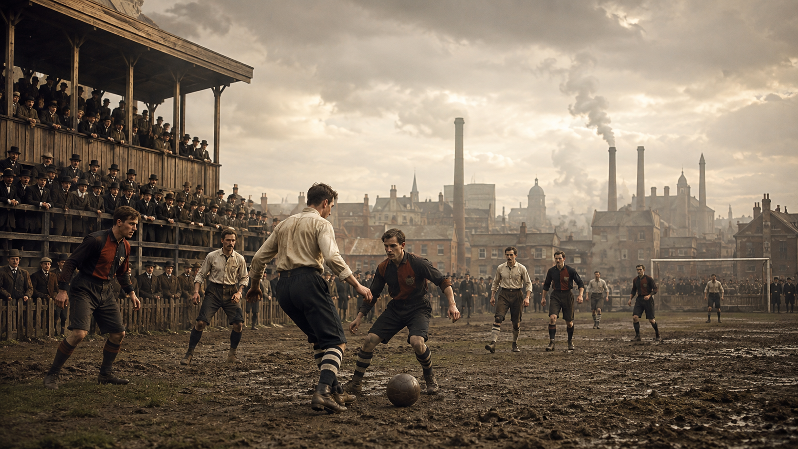
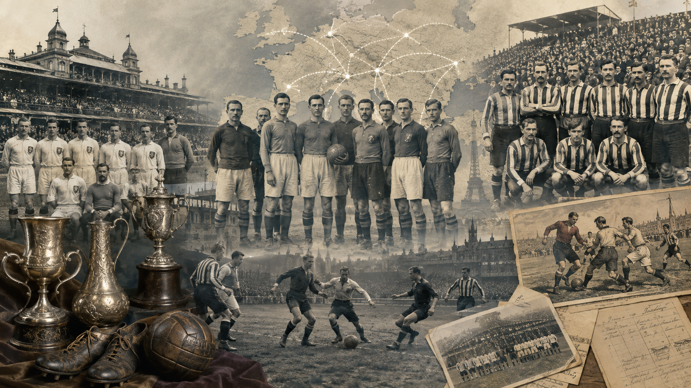
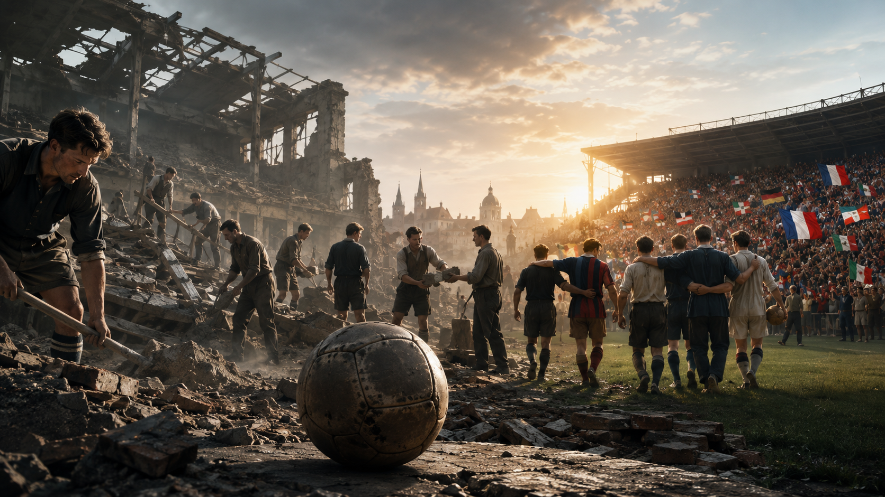
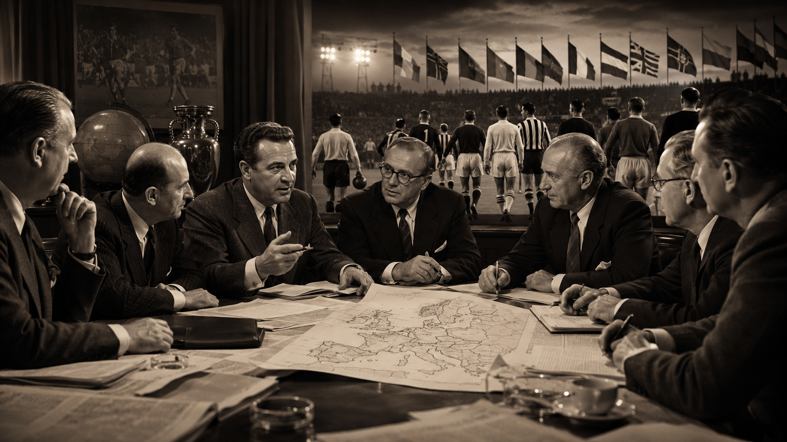

Chapter 1
Europe Before the European Cup (Before 1955)
Understanding European Football Before the Birth of the Competition That Changed History
Introduction
Every year, millions of fans from every corner of the world follow the UEFA Champions League with passion. For many, lifting the iconic trophy with its distinctive large handles represents the highest achievement a football club can attain. Yet for much of football history, such a competition simply did not exist.
By the beginning of the twentieth century, Europe had already established itself as the continent where football was most highly developed. Countries such as England, Scotland, Spain, Italy, Austria, Hungary, and Czechoslovakia boasted well-established clubs, packed stadiums, and fiercely contested domestic championships. Every nation had its own champions, star players, and distinctive style of play, but there was no objective way to determine which club truly stood above the rest in Europe.
The absence of a continental competition fueled endless debate. Newspapers argued over which teams were superior, supporters defended the prestige of their domestic leagues, and clubs arranged international friendlies to prove their quality. Yet those matches, however compelling, were never enough to establish a definitive sporting hierarchy.
Europe was also undergoing profound change. Two world wars disrupted the development of the game, forcing the suspension of countless competitions while leaving many clubs to face severe economic hardship and devastating human losses. As the continent began to rebuild after the Second World War, football entered a new era of growth, professionalism, and international expansion.
During this period, questions that had once seemed impossible to answer became increasingly pressing:
- Was the English champion truly superior to the Spanish champion?
- Could an Italian club compete on equal terms with a Hungarian side?
- Which team deserved to be recognized as the finest in Europe?
Finding answers to these questions became a necessity—not only for the sport itself, but also for the growing world of football journalism. Without realizing it, European football was moving toward the most significant turning point in its history.
This opening chapter does not yet focus on the European Cup or the UEFA Champions League. Before understanding how the competition came into existence, it is essential to explore the world that made it possible. We will examine what European football looked like before 1955, the competitions that already existed, how clubs from different countries measured themselves against one another, and the circumstances that ultimately led to the creation of the tournament that would transform international club football forever.
Only by understanding this historical context can we fully appreciate why the European Cup was far more than just another competition—it was a genuine sporting revolution whose influence continues to shape football more than seventy years later.
1.1 The Birth of Modern Football in Europe
From a British Pastime to a Continental Phenomenon
When exploring the history of the UEFA Champions League, most accounts begin in 1955, the year the European Cup was founded. The competition's true origins, however, stretch back many decades earlier, when football evolved from a simple pastime played in British schools into one of the most popular sports across Europe.
Although ball games had existed since ancient times, modern football officially emerged in England during the nineteenth century. At the time, schools and universities each played their own versions of the game. Every institution followed its own set of rules, making matches between teams from different cities or regions virtually impossible.
The need for a unified code led to a landmark event that would forever change the history of the sport. On 26 October 1863, representatives from several London clubs gathered at the Freemasons' Tavern in London to establish a common set of rules. Those meetings resulted in the creation of The Football Association (FA), widely recognized as the world's first national football association.
The formation of the FA marked a turning point. For the first time, an official set of rules made it possible to organize structured competitions and allow clubs to compete under the same conditions. Those regulations, known as the Laws of the Game, laid the foundations of modern football and, over time, would be adopted by virtually every football-playing nation.
During the decades that followed, the sport experienced remarkable growth throughout the United Kingdom. The Industrial Revolution encouraged the expansion of cities, the development of the railway network, and the creation of countless clubs linked to factories, neighbourhoods, churches, and educational institutions. Thousands of workers embraced football in their spare time, and matches quickly became an integral part of everyday life in many communities.
British influence proved decisive in spreading the game beyond its homeland. Merchants, engineers, sailors, diplomats, and workers carried football to ports and cities across Europe, where they founded clubs, organized the first matches, and introduced the rules of the game to local communities.
By the end of the nineteenth century, Scotland, Wales, and Ireland had already developed strong football traditions. Soon afterward, the sport established firm roots in the Netherlands, Belgium, Denmark, Switzerland, Germany, France, Italy, Spain, Austria, Hungary, and many other countries. Each nation embraced the game in its own way, developing distinctive playing styles, fierce rivalries, and domestic competitions that would eventually shape the identity of European football.
In its early years, football was an entirely amateur sport. Players received no wages and competed for prestige, honour, or loyalty to their local communities. As public interest grew and stadium attendances increased, however, some clubs began offering financial compensation to their players, setting football on the long road toward professionalism.
By the beginning of the twentieth century, football had outgrown its status as a uniquely British curiosity and had become an international phenomenon. Europe's major cities were home to established clubs, new domestic leagues were emerging, and the desire to see the best teams from different countries compete against one another grew stronger every year. Without realizing it, Europe was laying the foundations for the future creation of a continental club competition.
Why Was This Period So Important?
The birth of modern football did more than create clubs and domestic championships. It established a common language for every footballing nation in Europe. Thanks to the standardization of the rules, an English club could face a Spanish, Italian, or Hungarian opponent without altering the laws of the game. While this may seem obvious today, it was one of the essential foundations that would eventually make the creation of the European Cup possible decades later.
Curiosities
- The Football Association, founded in 1863, is the oldest national football association in the world.
- The original rules approved in 1863 prohibited actions that are now associated with rugby, establishing a definitive separation between the two sports.
- The FA Cup, founded in 1871, is the oldest official football competition still in existence.
- For many years, England was regarded as the world's leading football nation because it was where the modern rules of the game were first codified.
- The earliest footballs were hand-stitched leather balls that absorbed water easily in wet conditions, making them significantly heavier during matches.
Key Facts
Fact — Information
- Foundation of The Football Association — 26 October 1863
- Birthplace of modern football — England
- Oldest official competition still played — FA Cup (1871)
- First unified rulebook — Laws of the Game
- First major step toward international football — The spread of British football across Europe
Historical Legacy
Without the standardization of the rules and the rapid spread of football across Europe during the late nineteenth and early twentieth centuries, organizing a continental competition between clubs from different nations would never have been possible. The birth of modern football transformed a simple pastime into an organized sport and laid the foundations upon which the European Cup—and later the UEFA Champions League—would be built decades later.
1.2 The Rise of Europe's First National Leagues (1888–1939)
How the Competitions That Laid the Foundations of Continental Football Came to Life
Introduction
Once the rules of modern football had been established and the sport had taken root across much of Europe, the next major step was to create stable competitions that would allow the best teams in each nation to face one another on a regular basis. During the closing decades of the nineteenth century and the early years of the twentieth, the first national leagues began to emerge—a competition format that would permanently transform the organization of football.
Until then, most matches had been either friendlies or short-lived tournaments. Although they attracted considerable interest among supporters, they offered no reliable way to determine the strongest team in a city, a region, or an entire country. National league championships solved that problem by introducing regular fixtures, standardized rules, and a league system that rewarded consistency and performance over the course of a full season.
Over time, these competitions did far more than strengthen clubs. They gave birth to legendary rivalries, expanded football's fan base, and encouraged the development of distinctive playing styles in each country. Without the establishment of national leagues, the European Cup would never have become a reality.
England: The Birth of League Football
The first decisive step came in 1888, when English football administrator William McGregor, secretary of Aston Villa, championed the creation of a competition that would provide the country's leading clubs with a guaranteed fixture schedule. Until then, many teams relied almost entirely on friendly matches and the FA Cup, often resulting in long periods without official competition.
McGregor's proposal led to the creation of The Football League, widely recognized as the world's first national football league. Its inaugural season featured twelve English clubs competing in a round-robin format, establishing a structure that—with various refinements—remains the foundation of most league competitions today.
The impact was immediate. Clubs began to professionalize their operations, attendances rose steadily, and football evolved from a recreational pastime into a mass spectator sport.
The Spread of the League System Across Europe
The success of the English championship quickly attracted attention abroad. Gradually, national football associations across Europe adopted similar systems, adapting them to their own sporting traditions and domestic needs.
During the early decades of the twentieth century, a number of national leagues were established—many of which remain among the world's elite competitions today.
Notable examples include:
- Belgium, which organized one of the first national league championships outside the United Kingdom.
- The Netherlands, where football continued to flourish under strong British influence.
- Switzerland, which soon became one of the administrative centers of European football.
- Austria and Hungary, whose clubs would dominate the continental scene for several decades thanks to their advanced tactical approach.
- Italy, where the domestic championship gradually developed into one of the most competitive leagues in the world.
- Spain, which officially launched La Liga in 1929, laying the foundations for one of football's greatest rivalries between clubs such as Real Madrid and FC Barcelona.
- France, where professionalism developed more gradually before giving rise to a strong and well-organized national structure.
- Germany, where football remained organized through regional championships for much of this period before eventually being unified with the creation of the Bundesliga decades later.
Although each country adopted its own format, they all shared the same objective: to identify the best club in the nation each season.
The Growth of Professionalism
As football's popularity continued to grow, so too did its financial demands.
Stadiums were filling every weekend. Newspapers devoted increasing coverage to the sport, and clubs needed to attract the finest players in order to remain competitive.
These developments accelerated the rise of professionalism.
In England, professional football was officially recognized in the late nineteenth century, allowing players to earn wages for their sporting careers. Other countries followed a similar path over the following decades, albeit at very different speeds.
The professional era brought profound changes:
- Improved physical preparation.
- Greater tactical sophistication.
- Expanded football infrastructure.
- The construction of larger stadiums.
- Increased investment from sponsors and business interests.
- The establishment of permanent sporting institutions.
Football was no longer simply a form of entertainment—it was becoming a rapidly growing industry.
The Birth of Great Rivalries
The creation of national championships encouraged the emergence of rivalries that would eventually become central to the identity of each league.
In England, historic clashes between clubs from major industrial cities began to take shape.
In Spain, the first major regional rivalries emerged, particularly among clubs from Madrid, Barcelona, and Bilbao.
In Italy, fierce contests developed between clubs from the country's northern regions, while in Central Europe, encounters between Austrian and Hungarian clubs became some of the continent's most prestigious fixtures.
These rivalries did more than captivate supporters—they also sparked a question that appeared with increasing frequency in the sporting press:
What would happen if the champions of each country were able to compete against one another?
At the time, the idea still seemed distant. Yet it was already taking hold in the minds of journalists, football administrators, and supporters alike.
A Continent Full of Champions... But No Champion of Europe
By the early 1930s, virtually every major footballing nation in Europe had established a stable domestic league.
Each season crowned new champions.
Yet one fundamental question remained unanswered.
The English champion competed only in England.
The Spanish champion played exclusively in domestic competitions.
The same was true in Italy, France, Hungary, Austria, and elsewhere.
As a result, there was no objective way to determine which club truly deserved to be called the best in Europe.
Newspapers debated the issue.
Supporters defended the prestige of their domestic leagues.
Managers compared tactical philosophies.
But no one could settle the argument on the pitch.
Years later, the absence of a continental competition would become the strongest argument for creating the European Cup.
Curiosities
- The Football League, founded in England in 1888, is widely regarded as the world's first national football league.
- William McGregor proposed the creation of the league through a letter sent to several clubs, convinced that a fixed fixture schedule would guarantee football's financial stability.
- Before national leagues were established, many clubs relied almost entirely on friendly matches to remain active.
- During the early decades of the twentieth century, it was common for clubs to embark on lengthy international tours to face foreign opposition.
- Before the Second World War, Austria and Hungary were considered genuine footballing powers and played a major role in shaping the tactical evolution of the sport.
Key Facts
Category — Information
- First national league — The Football League (England, 1888)
- Principal architect — William McGregor
- First La Liga season — 1929
- Purpose of national leagues — To determine the best club in each country
- Historical significance — They laid the foundations for a future European club competition
Historical Legacy
The establishment of national leagues represented one of the most significant milestones in the evolution of European football. They produced stronger clubs, lasting organizational structures, and rivalries that continue to define the sport today. At the same time, however, they exposed an obvious limitation: no matter how dominant a club was within its own country, it could never officially prove that it was the finest team in Europe.
The desire to see national champions compete against one another would ultimately become the driving force behind the creation of the world's most prestigious club competition.

1.3 The First International Club Competitions
The Tournaments That Inspired the Birth of the European Cup
Introduction
By the beginning of the twentieth century, European football had become a fully established sport. The continent's leading nations had already developed domestic championships, clubs attracted thousands of spectators every weekend, and local rivalries grew stronger with each passing season. Yet one major limitation remained: the best teams from each country had very few opportunities to compete against one another.
International club matches were exceptional occasions. They were usually organized as friendly fixtures or as part of football tours, without a unified set of regulations or an official title at stake. Although these matches generated enormous excitement, they were never enough to determine which club truly deserved to be regarded as the best in Europe.
The need to measure the strength of each nation's champions led to the creation of several international club competitions. None of them succeeded in bringing together the whole of Europe, but each demonstrated that there was a growing appetite for a tournament on a continental scale. These early competitions became genuine testing grounds for the future of international football: they experimented with different formats, captured the imagination of supporters, and ultimately provided the inspiration for the creation of the European Cup in 1955.
The Challenge Cup (1897–1911)
Europe's First International Club Competition
The first international club competition officially recognized by football historians was the Challenge Cup, founded in 1897 within the Austro-Hungarian Empire.
At the time, Austria-Hungary was a vast multinational empire encompassing territories that today make up Austria, Hungary, the Czech Republic, Slovakia, Croatia, Slovenia, and several other regions of Central Europe. Clubs from these cities competed against one another on a regular basis, making it possible to organize an international tournament long before similar competitions emerged elsewhere on the continent.
The Challenge Cup was the brainchild of John Gramlick, one of the founders of the Vienna Cricket and Football Club. His vision was both simple and groundbreaking: to bring together the Empire's finest clubs in a single competition and determine which one truly was the strongest.
Although participation was limited geographically, the tournament introduced several revolutionary ideas for its time:
- Matches between clubs from different cities and regions.
- A knockout format.
- International prestige.
- Extensive coverage by the sporting press.
Throughout its fourteen-year history, the Challenge Cup helped raise the competitive standard of Central European football and proved that supporters enthusiastically embraced international club competitions.
Many football historians regard the Challenge Cup as the first direct precursor to the continental tournaments that would follow.
The Sir Thomas Lipton Trophy (1909 & 1911)
A Tournament Ahead of Its Time
At the beginning of the twentieth century, another competition emerged that, despite its brief existence, left a lasting mark on football history.
Held in Turin in 1909 and again in 1911, the Sir Thomas Lipton Trophy brought together representative clubs from England, Italy, Germany, and Switzerland.
The tournament was the brainchild of British entrepreneur Sir Thomas Lipton, renowned worldwide for his tea company. His ambition was to create an international competition that would pit some of Europe's finest clubs against one another.
Interestingly, the Football Association declined to send the English national champions, leaving England to be represented by West Auckland Town FC, a modest amateur club from County Durham.
Against all expectations, West Auckland won the inaugural tournament in 1909 and successfully defended the title in 1911, defeating Juventus in the final.
Although the competition was held only twice, it clearly demonstrated the enormous appeal of international matches between clubs from different countries.
The Mitropa Cup (1927)
The True Forerunner of the European Cup
If there is one tournament that can truly be regarded as the most important predecessor of the Champions League, it is the Mitropa Cup.
Founded in 1927, it initially brought together professional clubs from:
- Austria
- Hungary
- Czechoslovakia
- Yugoslavia
Teams from Italy, Romania, and other Central European nations joined the competition in later years.
The Mitropa Cup represented a major leap forward compared with earlier international tournaments.
For the first time, there was a stable annual international competition with clearly defined regulations, bringing together professional clubs competing specifically for an international title.
Throughout the 1920s and 1930s, Central European football was widely regarded as the most advanced on the continent. Clubs such as Rapid Vienna, Ferencváros, Sparta Prague, Slavia Prague, and Újpest dominated the international scene thanks to their tactical sophistication and the exceptional quality of their players.
The Mitropa Cup gave these clubs the opportunity to face each other on a regular basis, producing matches of remarkable technical quality that attracted attention from across Europe.
For the first time, journalists and supporters alike began speaking of a genuine international club champion.
The Latin Cup (1949)
The Final Step Before the European Cup
Following the Second World War, European football entered a period of reconstruction.
It was in this context that the Latin Cup was established by the football associations of:
- Spain
- Portugal
- France
- Italy
Unlike the Mitropa Cup, the Latin Cup was contested exclusively by the reigning national champions of these four countries.
Although the number of participants was limited, the standard of football was exceptionally high.
Among the clubs that took part were:
- Real Madrid
- FC Barcelona
- AC Milan
- Juventus
- Benfica
- Sporting CP
- Stade de Reims
The competition proved to be both a sporting and commercial success.
Large crowds filled the stadiums, while the international press followed every match with great interest.
Football administrators soon found themselves asking an inevitable question:
If four countries could organize a tournament for their national champions... why couldn't the rest of Europe do the same?
What had once seemed an ambitious dream was now beginning to look entirely achievable.
International Friendlies
In addition to these official competitions, many clubs toured across Europe to play friendly matches.
Real Madrid, Arsenal, Honvéd, Milan, Wolverhampton Wanderers, and several other clubs occasionally faced one another in fixtures that generated tremendous excitement.
The sporting press eagerly used these encounters to compare the strength of Europe's different domestic leagues.
However, friendly matches had several important limitations:
- There was no fixed competition calendar.
- Some clubs fielded reserve or experimental line-ups.
- The rules could vary from one match to another.
- No official trophy was at stake.
Even so, these fixtures demonstrated that football fans across Europe were eager to follow international club competitions.
A Continent Ready for a European Competition
By the early 1950s, the landscape of European football had changed dramatically from what it had been at the beginning of the century.
Europe now had:
- Well-established domestic leagues.
- Professional clubs.
- Large, modern stadiums.
- Easier international travel.
- A dedicated sporting press.
- Successful international club competitions.
Only one crucial piece was still missing: a tournament capable of bringing together the champions of the entire continent under a single set of rules.
The idea had been taking shape for decades.
All it needed now were the right people to turn it into reality.
Curiosities
- The Challenge Cup is regarded by many historians as Europe's first international club competition.
- West Auckland Town FC, an English amateur club, won both editions of the Sir Thomas Lipton Trophy.
- The Mitropa Cup became the first annual international tournament contested by professional European clubs.
- Before the Second World War, Austria, Hungary, and Czechoslovakia were footballing powers comparable to today's top leagues.
- The Latin Cup featured exclusively the national champions of four of Europe's strongest footballing nations.
- The success of these tournaments convinced journalists and football administrators that a pan-European competition was both practical and achievable.
Key Facts
Competition — Founded — Historical Significance
- Challenge Cup — 1897 — First international club competition
- Sir Thomas Lipton Trophy — 1909 — One of the earliest tournaments between clubs from different countries
- Mitropa Cup — 1927 — Principal precursor to the European Cup
- Latin Cup — 1949 — Immediate predecessor of the European Cup
Historical Legacy
The first international club competitions proved that football had outgrown national borders. Although none of them succeeded in bringing together every European champion, each contributed a vital building block to the evolution of the game. The Challenge Cup introduced the concept of an international club tournament; the Sir Thomas Lipton Trophy demonstrated the appeal of pitting clubs from different countries against one another; the Mitropa Cup established the model for an elite annual international competition; and the Latin Cup confirmed that national champions could compete with remarkable success, both on the pitch and in terms of public interest.
When the European Cup was launched in 1955, it was not starting from scratch. It built upon more than half a century of experimentation, innovation, and growing enthusiasm for international club football.
1.4 The Creation of FIFA and the Birth of a Truly International Game
How a Global Organization Changed the Future of Football Forever
Introduction
During the final decades of the nineteenth century, football experienced extraordinary growth. England had exported the game to much of Europe, and many countries had already established clubs, domestic championships, and their own national football associations. However, this rapid expansion brought with it a new challenge: each nation was beginning to develop slight differences in the interpretation of the Laws of the Game, the organization of matches, and the administration of competitions.
As the number of international fixtures increased, so too did the difficulties. There was no governing body capable of coordinating the various national associations, resolving disputes, or establishing common standards for football beyond the borders of individual countries.
Europe needed an organization capable of unifying the sport.
The answer arrived at the dawn of the twentieth century.
The Need for an International Organization
By the end of the nineteenth century, matches between national teams were becoming increasingly common. England, Scotland, Wales, and Ireland regularly competed in the British Home Championship, widely recognized as the first international tournament for national teams.
Beyond the British Isles, countries such as France, Belgium, the Netherlands, Switzerland, Denmark, and Germany were also beginning to organize international fixtures.
Yet every match required lengthy negotiations.
There were no clearly defined international regulations.
Scheduling fixtures was often difficult.
National football associations operated entirely independently of one another.
As football continued to grow, it became increasingly clear that this situation could not continue for much longer.
The Birth of FIFA
On 21 May 1904, representatives from seven European nations gathered in Paris to establish an organization that would oversee the international development of football.
The founding members were:
- France
- Belgium
- Denmark
- the Netherlands
- Spain (represented by Madrid Football Club)
- Sweden
- Switzerland
From that meeting emerged the Fédération Internationale de Football Association, universally known as FIFA.
Its first president was French journalist Robert Guérin, who took on the formidable challenge of building an international governing body virtually from the ground up.
In its early years, FIFA pursued relatively modest objectives:
- To standardize the rules of the game.
- To coordinate international matches.
- To strengthen cooperation between national football associations.
- To promote the global expansion of football.
At the time, no one could have imagined that this newly founded institution would eventually become the most influential sporting organization in the world.
Britain's Entry into FIFA
Paradoxically, the country where modern football had been born was not among FIFA's founding members.
The British football associations believed that, because of their historic role in creating and developing the sport, there was little need to join an international organization led by other nations.
However, as football continued to grow beyond the United Kingdom, that position became increasingly difficult to defend.
In 1905, The Football Association of England decided to join FIFA, followed in the years that followed by the other British associations.
England's membership gave the new organization considerable legitimacy and helped encourage the international adoption of the Laws of the Game, drafted and maintained by the International Football Association Board (IFAB), the body responsible for safeguarding football's official rules since 1886.
The Olympic Games and the Rise of International Football
Although FIFA had already been established, it had yet to organize its own global competition.
Football found the perfect stage in the Olympic Games.
From the early twentieth century onwards, the Olympic football tournament began bringing together national teams from different continents.
Among the most significant editions were:
- Antwerp 1920
- Paris 1924
- Amsterdam 1928
These tournaments highlighted the remarkable progress football had made beyond the British Isles.
The Uruguay national team astonished the footballing world by winning the gold medal in both 1924 and 1928, playing an innovative, dynamic, and technically brilliant brand of football.
Their victories proved that football had truly become a global sport.
The Birth of the FIFA World Cup
The success of the Olympic football tournaments convinced FIFA that the time had come to create its own international championship.
At the Amsterdam Congress of 1928, the organization officially approved the creation of a worldwide tournament for national teams.
Two years later, in 1930, Uruguay was chosen to host the inaugural FIFA World Cup.
Although several European national teams declined to participate because of the complexity and high cost of crossing the Atlantic, the tournament proved to be both an organizational and sporting success.
Uruguay became the first world champions after defeating Argentina in the final at Montevideo's Estadio Centenario.
From that moment on, the FIFA World Cup established itself as the premier international competition for national teams.
Yet one obvious gap remained.
Clubs—the true driving force behind European football—still had no international competition of comparable prestige.
FIFA's Influence on Club Football
During its early decades, FIFA devoted almost all of its efforts to the development of international football at the national team level.
Club competitions remained the responsibility of the individual national football associations.
Even so, the creation of an international governing body had far-reaching consequences for the future of the game.
FIFA helped promote:
- Cooperation between national football associations.
- The standardization of the Laws of the Game.
- The coordination of the international football calendar.
- Common refereeing procedures.
- International player transfer regulations.
- Mechanisms for resolving sporting disputes.
In other words, FIFA established the institutional framework that would, years later, make it possible to organize stable and well-structured international club competitions.
The Unstoppable Growth of European Football
Throughout the 1930s and 1940s, European football continued to flourish despite the disruption caused by the Second World War.
Domestic championships attracted ever-growing audiences.
Stadiums became larger.
The sporting press devoted more coverage to football than to any other sport.
Radio broadcasts brought the game to an even wider audience.
Clubs were beginning to evolve into powerful symbols of national identity.
Yet one important question remained unanswered.
While national teams already had the FIFA World Cup, clubs still lacked a competition that could bring together the continent's finest teams.
The idea of a European club tournament was no longer simply an ambitious vision.
It was increasingly being seen as a sporting necessity.
Curiosities
- FIFA was founded by just seven European nations; today, it has more than 200 member associations.
- Spain was represented at the founding meeting by Madrid Football Club, as the Royal Spanish Football Federation (RFEF) had not yet been established.
- England was not among FIFA's founding members, despite being the birthplace of modern football.
- The trophy awarded at the inaugural FIFA World Cup in 1930 was not yet known as the Jules Rimet Trophy. It was given that name later in honour of the FIFA president who played a key role in creating the tournament.
- Uruguay's Olympic triumphs in 1924 and 1928 convinced many European football administrators that the standard of football around the world had risen dramatically.
Key Facts
Event — Year — Significance
- Foundation of FIFA — 1904 — Establishment of the world's governing body for football
- England joins FIFA — 1905 — Strengthened FIFA's international legitimacy
- Uruguay's first Olympic gold medal — 1924 — Demonstrated the rise of world-class football beyond Europe
- First FIFA World Cup — 1930 — The first global football championship organized by FIFA
Historical Legacy
The creation of FIFA transformed football from a collection of isolated national competitions into a sport governed on an international scale. Through cooperation between national associations, the standardization of the Laws of the Game, and the experience gained from organizing international tournaments for national teams, football developed the institutional foundations needed to take on an even greater challenge: creating a competition that would regularly bring together Europe's finest clubs.
Although FIFA did not directly create the European Cup, it provided the organizational framework upon which the continental confederations—and, ultimately, UEFA—would later be built.

1.5 The Impact of the World Wars on European Football (1914–1945)
How Two Global Conflicts Forever Changed the Course of European Football
Introduction
At the beginning of the twentieth century, European football was experiencing an unprecedented period of growth. Domestic leagues were becoming firmly established, clubs were attracting ever-growing memberships, and the first international competitions were capturing the imagination of both the sporting press and supporters. Everything suggested that the game would continue to develop at a steady pace.
History, however, took an unexpected turn.
Within less than thirty years, Europe was engulfed by two devastating conflicts that would profoundly reshape the continent. The First World War (1914–1918) and the Second World War (1939–1945) did more than alter borders, governments, and economies—they also transformed football in ways that are rarely examined with the depth they deserve.
Thousands of footballers were called up for military service. Many lost their lives on the battlefield. Stadiums were destroyed or requisitioned for military purposes. Domestic championships were suspended, and countless clubs faced severe financial hardship. A sport that had served as both a form of entertainment and a symbol of local identity was suddenly overshadowed by the demands of war.
Paradoxically, once both conflicts had ended, football would become a powerful instrument for rebuilding relationships between nations. That transformation would prove to be one of the key factors that, years later, paved the way for the creation of the European Cup.
The First World War (1914–1918)
European Football's First Great Interruption
When the First World War broke out in July 1914, European football was in the midst of a period of remarkable expansion. England, Scotland, France, Belgium, Italy, and several other nations had already established well-organized domestic competitions, while interest in international fixtures continued to grow with each passing season.
Military mobilization changed that reality almost overnight.
Thousands of professional and amateur footballers were called up to serve in the armed forces of their respective countries. Many clubs suddenly lost a significant portion of their squads, and some became virtually inactive for years.
In several countries, official competitions were suspended altogether or replaced by regional tournaments held under exceptional circumstances. Where football continued to be played, its purpose was no longer purely sporting. Charity matches were frequently organized to raise funds for military hospitals, war widows, and wounded veterans.
Footballers Turned Soldiers
The war had a direct impact on a generation of players whose talent was only just beginning to flourish.
Countless footballers were killed in combat, while many others returned home with injuries that brought their playing careers to an early end.
Others spent several years away from the game, interrupting both their own development and the tactical progress of their clubs.
In England, one of the most well-known examples was the Footballers' Battalion, a military unit made up of professional footballers, referees, coaches, and supporters who volunteered to serve on the front lines.
For a time, the image of the footballer changed dramatically. No longer seen solely as an athlete admired by supporters, he also became a citizen called upon to serve his country in wartime.
Football as a Symbol of Hope
Despite the hardships of the conflict, football never disappeared completely.
On several fronts, soldiers organized improvised matches during periods of respite.
The most famous episode took place during the Christmas Truce of 1914, when British and German soldiers temporarily left their trenches to exchange greetings, gifts, and even play impromptu football matches in No Man's Land.
Although historians continue to debate the accuracy of some of the event's details, it has become one of the most powerful symbols of sport's ability to bring together people divided by war.
That image would remain deeply embedded in Europe's collective memory for decades to come.
Rebuilding After the First World War
With the end of the conflict in 1918, Europe began the long and difficult process of rebuilding.
Football, too, had to reconstruct itself.
Domestic championships were reorganized.
Many clubs gradually welcomed back their players.
Others disappeared forever as a result of the human and financial losses they had suffered during the war.
Yet the sport experienced an unexpected revival.
After years of hardship and deprivation, people longed for moments of normality and entertainment. Stadiums once again began to fill with supporters, and football quickly regained its place as one of the most popular forms of leisure.
Throughout the 1920s, the game expanded even more rapidly than it had before the outbreak of the war.
The Second World War (1939–1945)
An Even More Devastating Blow
Just as Europe appeared to have regained a measure of stability, an even greater conflict erupted in 1939.
The Second World War affected European football even more profoundly than the First.
In many countries, domestic competitions were suspended for several years.
Numerous stadiums were destroyed by bombing or requisitioned as military depots, field hospitals, or logistical centers.
The difficulties of travelling between cities made it virtually impossible to organize national championships under normal conditions.
Some competitions continued on a limited basis, particularly in regions far from the front lines, but the European football calendar was left completely fragmented.
Clubs Shaped by War
The war dramatically altered the fortunes of many historic clubs.
Some lost facilities that would take years to rebuild.
Others saw their players called up for military service or forced to flee their cities because of military occupation.
In Central and Eastern Europe, the political changes that followed the conflict brought sweeping transformations to the structure of the sport.
Several clubs were dissolved, merged, or re-established under new administrations.
In Germany, the entire football system had to be reorganized after the war, adapting to the country's new territorial division.
Football as a Tool for Reconstruction
When the war ended in 1945, Europe lay in ruins.
Millions of people had lost family members, homes, and their livelihoods.
Cities had been devastated, and relations between many nations remained extremely fragile.
In this context, sport took on a new meaning.
Football was no longer viewed solely as a competition.
It increasingly came to be seen as a means of bringing together nations that, only a few years earlier, had faced one another on the battlefield.
International matches became symbols of cooperation, mutual respect, and peaceful coexistence.
Sporting rivalries still existed, but the goal was no longer to prove one nation's superiority through war. Instead, that competition would take place on the football pitch, under a shared set of rules.
This new philosophy would leave a lasting mark on the birth of modern European football.
The Road Toward a United Europe Also Began Through Sport
While governments promoted political and economic cooperation to prevent future conflicts, the football world was moving in a similar direction.
National football associations strengthened their collaboration.
Football administrators began exploring ways to establish permanent international competitions.
The sporting press increasingly argued that Europe's finest clubs should meet on a regular basis.
The idea of a united Europe was not being built solely in parliaments or through international treaties.
It was also beginning to take shape inside football stadiums.
Curiosities
- During the First World War, thousands of European footballers served in the armed forces of their respective countries.
- Britain's Footballers' Battalion was composed of professional players, coaches, referees, and supporters.
- The Christmas Truce of 1914 turned football into a universal symbol of peace and fraternity.
- Several European stadiums were used as hospitals, military storage facilities, or civilian shelters during the Second World War.
- After 1945, many clubs were forced to rebuild their stadiums, facilities, and squads almost from scratch.
- In post-war Europe, the idea of using sport as a tool for reconciliation gained remarkable momentum.
Key Facts
Event — Impact on Football
- First World War (1914–1918) — Suspension of competitions and the mass enlistment of players
- Christmas Truce (1914) — Football became a symbol of peace
- Second World War (1939–1945) — Destruction of stadiums and the suspension of European football
- Post-war period (from 1945) — Reconstruction of the sport and stronger international cooperation
Historical Legacy
The two World Wars interrupted the natural development of European football, but they also profoundly transformed its meaning. When the conflicts ended, the sport came to be seen as more than simply a competition; it became a powerful instrument for bringing together societies that had endured years of conflict and division. This new perspective encouraged closer cooperation between national football associations, strengthened the desire to establish permanent international competitions, and helped lay the foundations for the creation of UEFA and the European Cup.
1.6 The Reconstruction of European Football and the Birth of a New Vision (1945–1954)
In the aftermath of the Second World War, football became a symbol of hope, reconstruction, and unity. In less than a decade, Europe went from healing the scars of war to envisioning a competition that would bring together the continent's finest clubs.
Introduction
When the Second World War came to an end in 1945, Europe was a continent profoundly transformed. Entire cities had been reduced to ruins, millions of people were trying to rebuild their lives, and relations between many nations remained deeply affected by years of conflict.
Football was no exception. Numerous stadiums had been damaged, many clubs had lost players, directors, and even their headquarters, while domestic competitions were only just beginning to reorganize.
Yet the sport demonstrated an extraordinary ability to recover. Within just a few years, stadiums were once again packed with supporters, domestic championships regained their prestige, and interest in international football reached unprecedented levels.
More importantly, a new way of thinking about football began to emerge. It was no longer enough to dominate a domestic league. Clubs wanted to prove themselves against the strongest teams on the continent. Journalists, football administrators, and supporters all shared the same ambition: to create a permanent European club competition.
The Reconstruction of Europe's Clubs
The immediate priority after the war was to restore normality to football.
In many countries, national football associations worked to reorganize the domestic championships that had been suspended during the conflict. Clubs rebuilt their squads, restored their stadiums, and gradually welcomed back their members and supporters.
The pace of recovery was remarkable.
By the end of the 1940s, football had once again become the most popular sport across much of Europe. Every weekend, thousands of supporters returned to the stadiums in search of more than entertainment. Football represented a return to everyday life and a symbol of stability for societies still trying to overcome the scars of war.
The Tactical Evolution of Football
The post-war period also ushered in a revolution in the way football was played.
For decades, the 2–3–5 formation, commonly known as the Pyramid, had dominated world football. However, coaches increasingly sought more balanced tactical systems capable of responding to the game's growing physical and technical demands.
One of the most influential systems was the WM, developed by Herbert Chapman, Arsenal's legendary manager, during the 1920s and further refined in the years that followed. The formation reorganized both defensive and attacking lines, providing greater balance while adapting to the changes introduced to the offside law.
Meanwhile, innovative tactical ideas were emerging in Central Europe and Hungary, placing greater emphasis on movement, positional interchange, and collective play. These concepts would profoundly influence the development of European football over the following decades.
As tactical standards continued to improve, international matches became increasingly captivating. Supporters no longer wanted to discover only which team had the better players—they also wanted to know which style of football would ultimately prevail.
The Rise of the Sporting Press
If there was one force that played a decisive role in the evolution of European football during this period, it was the sporting press.
In the years following the war, sports newspapers experienced remarkable growth. Specialized publications devoted extensive coverage to both domestic and international competitions, bringing football closer than ever to millions of readers.
Among them, the French newspaper L'Équipe, founded in 1946 as the successor to L'Auto, stood above the rest. Under the leadership of Jacques Goddet, it quickly established itself as one of Europe's most influential sporting publications.
Its journalists did far more than simply report match results. They analyzed tactics, compared domestic leagues, and constantly debated which club truly deserved to be regarded as the finest in Europe.
Those debates would prove instrumental in the birth of the European Cup.
The Radio Revolution
While newspapers informed readers the following day, radio brought football into people's homes almost as it happened.
Radio broadcasts allowed millions of supporters to follow matches played hundreds of kilometers away.
For the first time, football fans could learn the results of other European leagues almost instantly.
This new immediacy sparked enormous curiosity about foreign clubs.
Teams that had previously been virtually unknown beyond their own borders began to gain international recognition.
European football was gradually becoming a shared spectacle enjoyed across the continent.
The Great International Tours
In the post-war years, clubs resumed the international tours that had been interrupted by the conflict.
Teams such as Real Madrid, Budapest Honvéd, AC Milan, Wolverhampton Wanderers, Sporting CP, and Stade de Reims played friendly matches against foreign opponents, drawing crowds of tens of thousands of spectators.
Although these fixtures carried no official title, they attracted enormous media attention.
Every victory sparked fresh debate.
Was English football truly the strongest?
Had Hungary overtaken the traditional football powers?
Could the Spanish champions defeat the Italian champions?
The answers seemed to change from week to week.
Only one thing was beyond dispute: supporters wanted to see these contests far more often.
The Match That Changed History
On 13 December 1954, one of the most influential matches in the history of European football took place.
Wolverhampton Wanderers, the champions of England, defeated Budapest Honvéd, widely regarded at the time as the finest club side in the world and the backbone of Hungary's legendary national team.
The match was televised and attracted enormous international attention.
The following day, several British newspapers proclaimed Wolverhampton Wanderers the "World Champions of Club Football."
That headline ignited a heated debate across Europe.
Many journalists considered it absurd to declare the world's best club on the basis of a single friendly match.
Among the most outspoken critics was a French journalist named Gabriel Hanot.
His response would change the history of football forever.
Gabriel Hanot and a Revolutionary Idea
Gabriel Hanot, a former footballer, coach, and journalist for L'Équipe, had spent years advocating the creation of a tournament that would regularly pit Europe's finest clubs against one another.
In his view, no friendly match—regardless of its prestige—could determine the best team on the continent.
The only way to answer that question was through an official competition, governed by clear regulations, featuring home-and-away fixtures and bringing together the champions of Europe's domestic leagues.
Following the match between Wolverhampton Wanderers and Budapest Honvéd, Hanot published a series of articles calling for the creation of a European club championship.
His proposal quickly gained the support of journalists, football administrators, and national associations across the continent.
Europe was finally ready.
All that remained was to turn the idea into reality.
Curiosities
- The French newspaper L'Équipe played a decisive role in the creation of the European Cup.
- The match between Wolverhampton Wanderers and Budapest Honvéd was televised, something that was still relatively uncommon during the 1950s.
- Before becoming one of the driving forces behind the competition, Gabriel Hanot had enjoyed careers as a footballer, coach, and journalist.
- Many historians regard Hanot's articles published after the 1954 match as the true starting point of the European Cup.
- Budapest Honvéd featured legendary players such as Ferenc Puskás, Sándor Kocsis, and József Bozsik, all members of Hungary's celebrated national team known as the Mighty Magyars.
Key Facts
Event — Year — Significance
- End of the Second World War — 1945 — Beginning of the reconstruction of European football
- Foundation of L'Équipe — 1946 — Birth of the newspaper that would champion the creation of the European Cup
- Wolverhampton Wanderers vs. Budapest Honvéd — 1954 — The match that sparked the debate over Europe's best club
- Gabriel Hanot's public proposal — 1954 — The first formal step toward a continental club competition
Historical Legacy
Between 1945 and 1954, Europe not only rebuilt its cities but also revived its sporting life. Clubs regained their prominence, tactical innovations raised the standard of the game, and the sporting press increasingly looked beyond national borders. It was in this atmosphere of renewal that an idea emerged—one that was as logical as it was ambitious: if national teams already had a world championship and every country had its own domestic league, then the time had come to create a tournament that would bring together the finest clubs in Europe.
By then, the idea already had a name, passionate advocates, and overwhelming public support.
All it needed was an organization willing to bring it to life.

1.7 The Birth of UEFA and the Final Road to the European Cup (1954–1955)
The creation of UEFA, combined with the vision of a group of pioneering administrators and journalists, transformed a long-held dream into a reality that would change the history of club football forever.
Introduction
By the early 1950s, Europe possessed everything needed to launch a continental club competition. Domestic leagues were firmly established, international travel was becoming increasingly accessible, the sporting press followed matches between clubs from different countries with enormous enthusiasm, and supporters were calling for an objective way to determine which club truly was the best in Europe.
The idea had been developing for decades. Competitions such as the Challenge Cup, the Mitropa Cup, and the Latin Cup had already demonstrated the enormous appeal of international club tournaments. Yet one essential element was still missing: an organization capable of coordinating every national football association under a single project.
That organization would become the Union of European Football Associations, better known by its acronym: UEFA.
Its creation marked the beginning of a new era for European football and ultimately paved the way for the birth of the European Cup.
The Need for a European Governing Body
During its first decades, FIFA had played a fundamental role in the global expansion of football. However, its responsibilities were worldwide in scope, and its primary focus remained international competitions for national teams.
Europe needed an institution of its own.
European football associations governed the vast majority of the world's professional clubs, organized the most prestigious domestic championships, and accounted for the highest number of international fixtures. Coordinating all of these activities was becoming increasingly complex.
At the same time, other continents had begun considering the creation of regional confederations to oversee their own competitions.
Together, these developments strengthened the case for establishing an independent European confederation operating within FIFA's overall structure.
The Foundation of UEFA
On 15 June 1954, representatives from 25 national football associations gathered in Basel, Switzerland.
The meeting took place just days before the start of the 1954 FIFA World Cup, which was also being hosted in Switzerland.
Following a series of meetings, the associations officially approved the creation of the Union des Associations Européennes de Football (UEFA).
The French administrator Henri Delaunay, one of the project's principal architects, had spent years advocating the establishment of a European football organization. Although he passed away only a few months before UEFA was officially founded, his work proved instrumental in bringing the new institution to life.
The Dane Ebbe Schwartz was elected as UEFA's first president, while Pierre Delaunay, Henri Delaunay's son, assumed the key role of General Secretary.
The new organization was founded with several core objectives:
- To strengthen cooperation between Europe's national football associations.
- To organize European competitions.
- To coordinate the international football calendar.
- To represent the interests of European football within FIFA.
Without realizing it, its founders had created the governing body that would one day oversee some of the most prestigious sporting competitions in the world.
Gabriel Hanot and the Final Push
While UEFA was taking its first steps, Gabriel Hanot continued using the pages of L'Équipe to champion the creation of a European club championship.
Following the match between Wolverhampton Wanderers and Budapest Honvéd in December 1954, Hanot published a series of articles criticizing the habit of proclaiming the "best team in the world" on the basis of friendly matches.
His proposal was simple and compelling:
If we truly want to know which is the best club in Europe, we must organize an official competition between the national champions.
The idea immediately gained support within the editorial offices of L'Équipe.
Journalists such as Jacques Ferran and Jacques de Ryswick began collaborating on the design of a possible set of regulations for the new tournament.
For the first time, the concept had evolved beyond a journalist's opinion and become a concrete, well-defined project.
From the Newspaper to the Football Associations
In early 1955, L'Équipe took an unprecedented step.
The newspaper sent invitations directly to some of Europe's most prestigious clubs to discuss the creation of a new continental competition.
Among the clubs invited were some of the game's most distinguished institutions:
- Real Madrid
- AC Milan
- Stade de Reims
- Anderlecht
- Sporting Clube de Portugal
- Partizan Belgrade
- Rapid Vienna
- PSV Eindhoven
- Djurgårdens IF
- Rot-Weiss Essen
The discussions proved remarkably positive.
Many club officials agreed that the time had come to establish a permanent European championship.
Even so, one major hurdle remained: convincing the national football associations and securing UEFA's official backing.
UEFA's Decisive Role
Although the idea had originated within the sporting press, it soon became clear that a competition of such magnitude could only succeed under the authority of an official governing body.
The newly founded UEFA quickly recognized the project's enormous potential.
After reviewing the proposal and consulting with the national football associations, UEFA agreed to take responsibility for organizing the tournament.
That decision proved to be pivotal.
Participation would no longer depend solely on agreements between clubs but would instead be regulated by an internationally recognized governing body.
From that moment on, the future European Cup possessed both sporting legitimacy and institutional stability.
The Approval of the European Cup
During the spring of 1955, the final details of the tournament's regulations were completed.
It was agreed that participation would primarily be reserved for the champions of Europe's leading domestic leagues.
The competition would be played as a two-legged knockout tournament, with each club playing one match at home and one away.
This format was designed to reduce the influence of home advantage and provide a fairer sporting contest.
The proposal was finally approved.
The European Champion Clubs' Cup—later known simply as the European Cup—had officially been born.
For the first time in history, the national champions of different countries would compete in a single official tournament to determine the finest club in Europe.
The Pioneer Clubs
The inaugural edition featured sixteen clubs representing different European nations.
Although not every participant was a reigning domestic champion—in some cases, invitations were extended based on a club's international prestige—the tournament brought together many of the continent's most respected institutions.
Among them were:
- Real Madrid (Spain)
- Stade de Reims (France)
- AC Milan (Italy)
- Anderlecht (Belgium)
- Rapid Vienna (Austria)
- Partizan Belgrade (Yugoslavia)
- PSV Eindhoven (Netherlands)
- Hibernian (Scotland)
These clubs agreed to take part in a competition whose future was anything but certain.
None of them could have imagined that they were writing the opening chapter in the history of what would one day become the UEFA Champions League.
The Beginning of a New Era
The approval of the European Cup represented far more than the creation of another football tournament.
It marked the birth of an entirely new way of thinking about club football.
From that moment forward, a club's prestige would no longer be measured solely by its domestic success.
There was now a higher stage.
A competition where the best faced the best.
A tournament that would soon become the ultimate dream of every major football club in Europe.
The history of the UEFA Champions League had begun.

Curiosities
- The original idea for the European Cup was championed by journalists before it was embraced by football administrators.
- Although Gabriel Hanot never served as president of the competition, he is widely regarded as its principal visionary.
- UEFA was founded only one year before organizing the inaugural edition of the tournament.
- Several participants in the first European Cup were invited because of their international reputation rather than solely for being domestic champions.
- The two-legged knockout format was considered the fairest way to determine Europe's strongest club.
Key Facts
Event — Date — Significance
- Foundation of UEFA — 15 June 1954 — Creation of European football's governing body
- First UEFA President — Ebbe Schwartz — Led the new confederation from its foundation
- Gabriel Hanot's campaign — 1954–1955 — Proposed an official competition between Europe's national champions
- Approval of the European Cup — 1955 — Official creation of Europe's premier club competition
Historical Legacy
The foundation of UEFA and the creation of the European Cup brought an end to more than half a century of debate over which club truly deserved to be called the best in Europe. What began as an idea championed by visionary journalists and embraced by forward-thinking football administrators evolved into a competition that would redefine European club football. From 1955 onward, the history of Europe's clubs would no longer be written solely within the borders of their own countries, but on a continental stage where every victory carried far greater significance.